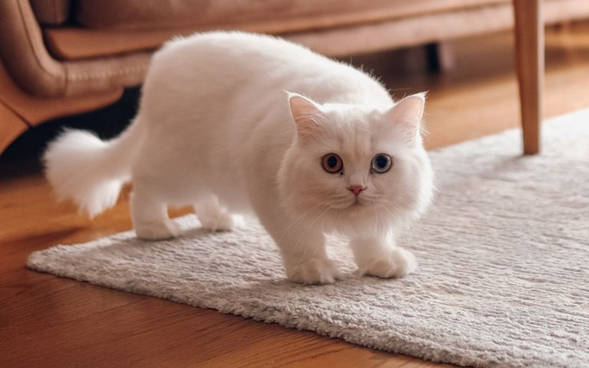

먼치킨 고양이 키우기 완벽 가이드 — 짧은 다리의 진실과 관절 관리

아장아장 걷는 짧은 다리로 사랑받는 먼치킨. 하지만 그 귀여움 뒤에는 입양 전 반드시 알아야 할 골격 건강 이슈가 있습니다. 이 글은 먼치킨의 매력과 함께, 불편할 수 있는 진실까지 솔직하게 담았습니다.
한눈에 보는 먼치킨
| 크기 | 소~중형묘 (체중 약 2.5~4.5kg) |
|---|---|
| 수명 | 약 12~15년 |
| 털빠짐 | 중간 (단모/장모 모두 존재) |
| 활동량 | 중상 (호기심·장난기 많음) |
| 성격 | 사교적·명랑, 사람을 잘 따름 |
| 초보자 적합도 | 중간 (환경 준비와 건강 이해가 전제) |
짧은 다리의 진실 — 입양 전 필독
먼치킨의 짧은 다리는 귀여운 "특징"이 아니라, 연골 발달에 관여하는 유전자 변이의 결과입니다. 그래서 이 품종은 다음과 같은 건강 이슈가 보고되어 있습니다.
- 척추전만증(허리가 아래로 굽음) — 심하면 호흡·장기에 부담을 줄 수 있습니다.
- 흉곽 기형(누두흉) — 가슴뼈가 안쪽으로 함몰되는 기형이 보고됩니다.
- 관절 부담·관절염 — 짧은 다리 구조상 관절에 가는 부담이 상대적으로 큽니다.
모든 먼치킨이 아픈 것은 아니고 건강하게 장수하는 개체도 많습니다. 다만 "알고 준비하는 것"과 "모르고 데려오는 것"은 완전히 다릅니다. 일부 나라에서는 이런 이유로 먼치킨 번식 자체를 규제하기도 합니다. 스코티시폴드의 귀처럼, 귀여운 외형이 유전 질환과 맞닿아 있는 품종이라는 점을 이해하고 결정해 주세요. (스코티시폴드의 접힌 귀 이야기도 함께 읽어보세요)
성격과 기질
성격만 보면 먼치킨은 모범생입니다. 사교적이고 명랑하며 사람을 잘 따르고, 다른 반려동물과도 잘 지냅니다. 호기심이 많아 까치처럼 반짝이는 물건을 모으는 개체도 있습니다. 다리가 짧아도 달리기는 빠르고, 미어캣처럼 뒷다리로 서서 두리번거리는 모습이 트레이드마크입니다.
관리 포인트 — 관절을 지키는 환경 만들기
수직 이동 배려
- 캣타워는 단 간격이 낮고 완만한 것으로 골라주세요.
- 소파·침대 옆에 스텝(계단)을 두어 높은 점프를 줄여주세요.
- 미끄러운 바닥엔 매트를 깔면 착지 충격이 줄어듭니다.
체중 관리 — 가장 중요
같은 비만이라도 먼치킨에게는 관절·척추 부담이 더 큽니다. 비만도 자가진단을 주기적으로 하고, 급여량을 재서 주세요. 사료 선택은 사료 고르는 기준을 참고하세요.
정기 검진
걸음걸이 변화, 점프 회피, 만졌을 때 아파하는 반응은 관절·척추 이상 신호일 수 있습니다. 이상이 보이면 미루지 말고 병원에서 확인하세요.
입양 전 현실 체크 — 환경 세팅이 진짜 비용
먼치킨은 분양가 자체가 낮지 않은 품종이지만, 초보 집사가 예상하지 못하는 지출은 데려온 다음에 시작됩니다. 이 품종은 그냥 고양이 용품이 아니라 관절과 척추를 배려한 용품을 갖춰야 하기 때문입니다. 아래 금액은 시중에서 흔히 보이는 가격대일 뿐, 제품과 브랜드에 따라 위아래로 크게 벌어집니다.
| 낮은 단 캣타워 또는 계단형 구조물 | 10만~25만 원 |
|---|---|
| 소파·침대용 펫 스텝 2개 | 6만~15만 원 |
| 미끄럼 방지 매트 (주요 동선) | 5만~15만 원 |
| 입구 턱이 낮은 화장실 | 3만~8만 원 |
| 초기 환경 세팅 합계 | 25만~60만 원 |
| 월 유지비 | 9만~16만 원 (사료·모래·보조제·검진 적립) |
보험을 생각한다면 순서가 중요합니다. 척추나 흉곽 이상은 타고난 골격 문제로 분류될 수 있어, 일단 진단 기록이 남으면 그 부위와 관련된 치료는 이후 보장에서 제외되는 경우가 많습니다. 가입 의사가 있다면 증상이 나타나기 전, 가급적 어릴 때 여러 상품의 보장 범위를 비교해 보세요. 이미 진단을 받은 뒤에 알아보는 것은 늦습니다.
하루 돌봄 시간과 집 구조
밥·화장실·빗질에 놀이까지 하루 20~30분이면 됩니다. 다만 놀이는 한 번에 몰아서 하기보다 짧게, 낮게, 여러 번으로 나누는 편이 몸에 부담이 적습니다.
집은 넓은 곳보다 높이 차가 적은 평면 구조가 유리합니다. 그런 점에서 원룸이나 작은 아파트는 오히려 잘 맞습니다. 반대로 이 품종에게 곤란한 구조가 하나 있는데, 복층 원룸의 좁고 가파른 사다리 계단입니다. 오르내리다 미끄러지면 허리에 그대로 충격이 가므로, 그런 집이라면 계단 입구를 막고 아래층 생활만 하게 하는 편이 안전합니다.
얼마나 혼자 둘 수 있을까
먼치킨은 사교적인 성격이라 다른 고양이보다 사람을 더 찾는 편입니다. 하루 8시간 정도의 부재는 대체로 무난하지만, 매일 12시간 이상 혼자 있는 생활이 이어지면 심심함에서 오는 행동 문제(한밤중 소란, 물건 떨어뜨리기)가 나타나기 쉽습니다. 장시간 부재가 잦다면 두 마리 생활도 방법입니다. 다만 짝은 쉬지 않고 뛰어다니는 어린 고양이보다, 비슷한 속도로 노는 아이가 좋습니다. 속도가 안 맞으면 먼치킨 쪽이 무리하게 됩니다.
나이대별 관리 포인트
성장기 (~12개월) — 이때 만든 동선이 평생 간다
생후 4~8개월은 활동량이 폭발하는 시기입니다. 이 무렵 소파나 식탁에 뛰어올라 성공한 경험이 쌓이면 그 경로가 습관으로 굳어버립니다. 스텝은 문제가 생긴 뒤가 아니라 데려온 첫날 놓아야 하는 이유입니다.
- 등이 아래로 굽는 변화는 자라면서 서서히 드러나는 경우가 있습니다. 한 달에 한 번, 같은 위치와 각도에서 옆모습 사진을 찍어두면 변화를 알아채기 쉽습니다.
- 첫 검진 때 척추와 가슴 부위 방사선을 한 번 찍어 기준 영상으로 남겨두면, 나중에 비교할 자료가 생깁니다. 다만 보험 가입을 이유로 필요한 검사를 미루지는 마세요. 진단이 늦어져 생기는 손해가 훨씬 큽니다.
- 이 시기 놀이는 사냥 욕구를 채우되 착지 충격을 줄이는 방향으로 잡으세요.
성묘기 (1~7세) — 100g 단위로 보는 체중
3.5kg 고양이에게 300g은 체중의 8~9%입니다. 같은 300g이라도 다리가 짧은 골격에서는 허리와 관절이 받는 부담이 다릅니다. 가정용 저울로는 고양이만 올려 재기 어려우니, 이동장에 넣어 함께 잰 뒤 빈 이동장 무게를 빼세요. 매달 같은 저울, 같은 이동장으로 재야 100g 단위의 변화가 의미를 갖습니다. (비만도 자가진단으로 체형 확인하기)
이 시기에 눈여겨볼 변화는 이런 것들입니다.
- 잘 쓰던 스텝이나 계단을 어느 날부터 쓰지 않음
- 뒷다리로 서서 두리번거리던 자세를 더 이상 하지 않음
- 화장실에서 자세를 오래 잡거나 들어가기를 망설임
이런 변화가 갑자기 생겼다면 성격이나 기분 문제가 아닐 수 있으니 병원에서 확인해 보세요.
노령기 (8세~) — 동선을 한 번 더 낮출 때
- 젊을 때 잘 쓰던 3단 스텝이 노령기에는 높게 느껴질 수 있습니다. 해마다 한 번씩 단 간격을 다시 재고 낮춰주세요.
- 화장실은 턱이 5cm 이하이거나 한쪽 면이 낮은 형태로 바꿔주는 것이 좋습니다.
- 밥그릇과 물그릇을 살짝 높여주면 목과 허리를 덜 굽히게 되어 식사가 편해집니다.
- 관절이 불편해지면 화장실 밖 배변이 늘 수 있습니다. 버릇이나 반항으로 오해하기 전에 몸 상태와 화장실 접근성부터 점검하세요. (화장실 문제 원인별 체크리스트)
그루밍 — 스스로 닿지 않는 부위 챙기기
먼치킨 그루밍에서 중요한 것은 털 길이가 아니라 팔다리 길이입니다. 다리가 짧으면 몸을 비틀어 등 가운데와 꼬리 밑까지 혀가 닿기 어렵고, 뒷발로 귀 뒤나 턱 아래를 긁는 동작도 다른 고양이보다 서툰 경우가 있습니다. 그래서 손질이 필요한 자리가 정해져 있습니다.
- 등 가운데에서 꼬리 밑 — 가장 먼저 기름지고 뭉치는 구간입니다. 단모라도 주 2회는 이 부위를 중심으로 빗어주세요.
- 항문 주변과 뒷다리 안쪽 — 배변 후 스스로 정리하지 못해 털에 묻는 일이 생깁니다. 장모 먼치킨이라면 이 부위를 짧게 정리해두는 편이 위생적입니다. 미용실에서는 '위생 미용'으로 요청하면 되고, 비용은 부분 미용 2만~5만 원, 전체 미용 6만~12만 원 선이지만 업체와 지역에 따라 차이가 큽니다.
- 턱 아래 — 혀가 닿지 않는 자리라 검은 알갱이 같은 턱 여드름이 생기기 쉽습니다. 플라스틱 식기를 도자기나 스테인리스로 바꾸고 매일 닦아주면 나아지는 경우가 많으니 먼저 시도해 볼 만합니다. 붉게 붓거나 진물이 보이면 짜지 말고 병원에서 확인하세요.
- 발톱 — 2~3주 간격. 몸을 웅크리는 자세가 불편한 아이는 뒷발톱 손질을 특히 싫어합니다. 한 번에 다 하려 하지 말고 하루에 한두 개씩 나눠 깎으면 서로 편합니다.
- 목욕 — 정기적으로 할 필요는 없습니다. 배나 뒷다리에 뭔가 묻었을 때 그 부위만 미지근한 물수건으로 닦아내는 것으로 대부분 해결됩니다. 전신을 씻겨야 한다면 세워둘 필요 없이 물을 얕게 받은 대야에서 짧게 끝내세요.
안는 법과 놀이법 (먼치킨 전용)
안는 법 — 겨드랑이만 잡지 마세요
아이 겨드랑이에 손을 넣어 번쩍 들어 올리는 방식은 어떤 고양이에게도 좋지 않지만, 먼치킨에게는 특히 그렇습니다. 앞다리가 짧아 몸통과 뒷다리 무게가 그대로 허리에 매달리는 형태가 되기 때문입니다.
- 한 손은 앞다리 뒤 가슴 아래를 받치고, 다른 손으로 엉덩이와 뒷다리를 함께 받쳐 몸이 수평이 되게 안으세요.
- 내려놓을 때 공중에서 손을 놓아 뛰어내리게 하지 말고, 네 발이 바닥에 닿는 것을 확인한 뒤 손을 떼세요.
- 안기는 것을 싫어하는 아이라면 억지로 들지 말고, 무릎 위로 스스로 올라오도록 유도하는 편이 낫습니다.
놀이와 훈련
낚싯대를 머리 위로 높이 들어 뛰어오르게 하는 놀이는 피하세요. 대신 장난감을 바닥에 붙여 좌우로 빠르게 끄는 방식이 이 품종의 몸에 맞고, 사냥 욕구도 충분히 채워집니다. 터널이나 상자, 노즈워크 매트처럼 수평으로 움직이는 놀이를 늘리면 활동량은 유지하면서 관절 부담은 줄일 수 있습니다.
훈련 면에서 먼치킨은 어렵지 않은 편입니다. 사람 반응에 민감하고 학습이 빨라, 이름을 부르면 오기·이동장에 스스로 들어가기·발톱 깎을 때 가만히 있기 같은 것을 간식과 함께 짧게 반복하면 잘 익힙니다. 한 번에 몇 분, 성공했을 때 바로 보상하는 방식이 효과적입니다. 반대로 야단치거나 억지로 붙잡는 방식은 사교적인 성격일수록 역효과가 크니 피하세요.
초보 집사가 자주 하는 실수 5가지
- "점프를 못 하니까 안전하다"고 생각한다 — 먼치킨은 생각보다 잘 뜁니다. 문제는 뛸 수 있느냐가 아니라 착지 충격을 몸이 견디기 어렵다는 점입니다. 못 올라갈 거라 믿고 높은 선반에 방석을 올려두면 결국 올라가고, 다치는 건 내려올 때입니다.
- 미어캣 자세를 반복해서 시킨다 — 뒷다리로 서는 모습이 귀엽다고 간식을 위로 들어 계속 시키는 경우가 많습니다. 스스로 가끔 하는 것과 사람이 유도해 반복시키는 것은 다릅니다. 간식은 코높이에서 주세요.
- 사진 찍으려고 번쩍 들어 올린다 — 짧은 다리가 강조되는 각도를 만들려다 허리에 무리를 주는 자세가 나오기 쉽습니다. 위의 안는 법을 참고해 항상 엉덩이를 받쳐주세요.
- 턱 높은 화장실을 그대로 쓴다 — 드나들기 힘들면 가장자리에 걸치거나 아예 밖에서 해결하는 일이 생깁니다. 성격이나 버릇 문제로 넘기기 전에 입구 높이부터 확인해 보세요.
- 사료를 눈대중으로 준다 — 체구가 작아서 조금만 더 줘도 비율로는 큰 차이가 납니다. 계량컵보다 주방 저울로 g 단위를 재는 편이 정확하고, 간식은 하루 총열량의 10% 안쪽으로 잡으세요. (사료 고르는 기준)
이런 분께 잘 맞아요
- 품종의 건강 이슈를 이해하고 환경(스텝·낮은 캣타워)을 준비할 수 있는 분
- 사교적이고 장난기 많은 고양이를 원하는 가정
- 정기 검진과 체중 관리를 꾸준히 할 수 있는 집사
자주 묻는 질문 (FAQ)
Q. 먼치킨끼리 교배하면 왜 안 되나요?
짧은 다리 유전자를 양쪽에서 물려받으면 태아 단계에서 치명적인 것으로 알려져 있습니다. 그래서 먼치킨은 일반 고양이와 교배시키며, 이 또한 이 품종의 번식 윤리 논쟁이 있는 이유입니다.
Q. 다리가 짧으면 화장실 이용이 불편하지 않나요?
입구 턱이 낮은 화장실을 골라주면 문제없습니다. 다만 몸을 잘 관찰해서 드나들기 힘들어하는 기색이 있으면 바꿔주세요.
Q. 건강한 먼치킨을 만나려면 어떻게 해야 하나요?
부모묘의 척추·흉곽 건강 이력을 확인할 수 있는 곳에서 입양하고, 입양 직후 기초 검진으로 골격 상태를 확인해 두는 것이 좋습니다.